THAILAND'S FIRST BANDOL · EST. 2022
DEADKAT
เสียงคำราม · จังหวะไอดอล · จิตวิญญาณไทย
METALCORE ✦ IDOL ✦ THAI CULTURE ✦ THREE LANGUAGES ✦ METALCORE ✦ IDOL ✦ THAI CULTURE ✦ THREE LANGUAGES ✦
มากกว่าวงดนตรี มากกว่าไอดอล
เมื่อความหนัก
ปะทะความสดใส
DEADKAT คือ BANDOL วงแรกของไทย—การผสมระหว่างวงดนตรีและไอดอลที่หลอม Metalcore, J-Rock และอิเล็กทรอนิกส์ เข้ากับท่วงท่ารำและเครื่องดนตรีพื้นบ้านไทย
“เราไม่เลือกว่าจะหนักหรือน่ารัก เราเป็นทั้งสองอย่าง”
- 2022
- ก่อตั้ง
- 07
- สมาชิก
- 06
- ซิงเกิล
- 03
- ภาษา
เรื่องราวของ
DEADKAT
DEADKAT เป็นวงดนตรี BANDOL วงแรกของไทย—การผสมผสานระหว่างไอดอลและวงดนตรี ประกอบด้วยสมาชิก 7 คน ได้แก่ YOKO, SAORI, MION, ROSE, AIZU, KUROKI และ YEVS ก่อตั้งขึ้นในปี 2022 และปล่อยผลงานแล้ว 6 ซิงเกิล ได้แก่ “It’s Never Too Late,” “Fleeting Lights,” “VIOLENCE,” “Polaroid,” “Cat Worship” และผลงานล่าสุด “ให้มันเป็นตัวฉัน (Bear the Burden)” โดยทุกเพลงผลิตและสร้างสรรค์ภายใต้สังกัด BLACKAT RECORDS
DEADKAT มีเอกลักษณ์โดดเด่นบนเวทีจากการผสมองค์ประกอบที่แตกต่างกันอย่างลงตัว วงมีนักร้องหลัก 5 คนที่นำเสนอการแสดงเต็มพลัง ดุดัน แต่ยังคงเสน่ห์และความสดใส ถ่ายทอดผ่านการร้องและการเต้นที่เปี่ยมด้วยพลังงาน
ดนตรีของพวกเธอผสานอิเล็กทรอนิกส์และร็อกอย่างมีชีวิตชีวา สร้างซาวด์ที่กล้าหาญ มีสีสัน และเข้าถึงผู้ฟังได้หลากหลาย อีกหนึ่งจุดเด่นคือเนื้อเพลงสามภาษา—ไทย ญี่ปุ่น และอังกฤษ—ซึ่งช่วยขยายฐานผู้ฟังและทำให้ผลงานของ DEADKAT เข้าถึงผู้ฟังระดับนานาชาติ
การนำเสนอหลายภาษาไม่เพียงสะท้อนความหลากหลายทางวัฒนธรรมของวง แต่ยังเชื่อมโยงแฟนเพลงจากหลากหลายภูมิภาคและพื้นเพทางภาษา ความสามารถในการหลอมรวมองค์ประกอบที่แตกต่างให้เป็นการแสดงที่เป็นหนึ่งเดียวและน่าติดตาม คือหลักฐานของความยืดหยุ่นและความคิดสร้างสรรค์ของ DEADKAT ในฐานะศิลปิน
MEET THE KATS
TURN IT LOUD
หกบทเพลง หกโลกที่เชื่อมความดุดันเข้ากับเมโลดี้และรากวัฒนธรรมไทย
THAI
ROOTS
ROOTS
WATCH ON YOUTUBE · THAI MUSIC SHOWCASE
FROM THAILAND TO THE WORLD
รากไทย
เสียงสากล
พิณ แคน หนังตะลุง มโนราห์ และผ้าไทย ไม่ได้เป็นเพียงเครื่องประดับ แต่เป็นส่วนหนึ่งของภาษาเสียงและภาพของ DEADKAT ที่เดินทางไปพร้อมกับวงในทุกเวที
NO QUIET NIGHTS
จากกรุงเทพฯ สู่ไทเปและไทจง—ทุกเวทีคือพื้นที่ปล่อยพลังเต็มพิกัด
TOUR GALLERY · ON STAGE
พลังสดจากทุกเวที
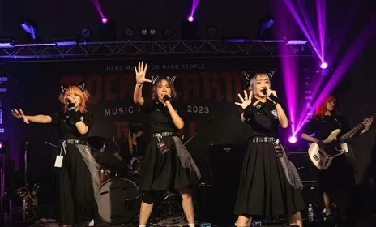
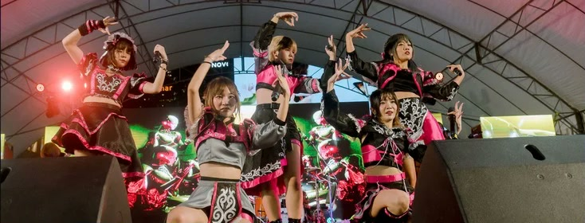
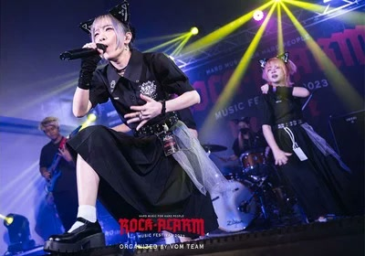
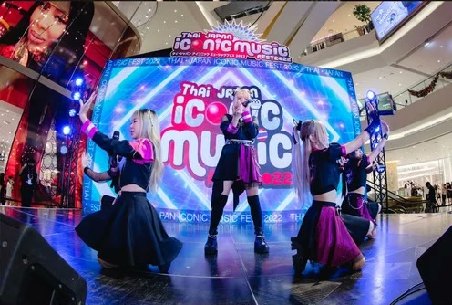
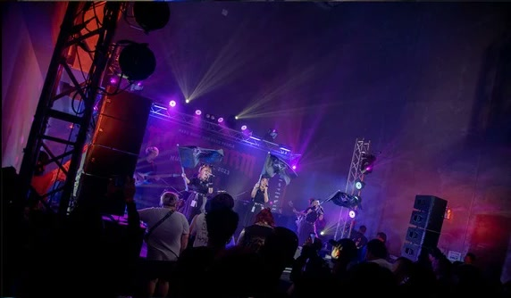
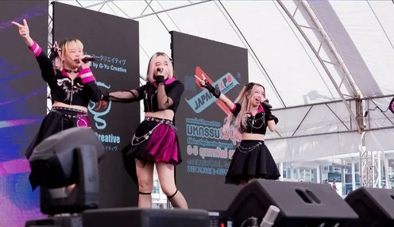
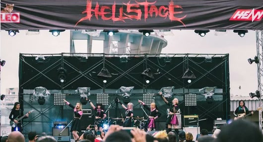
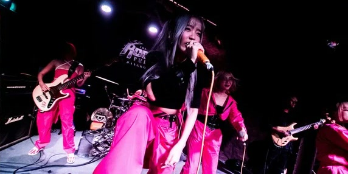
EVENTS & CONCERTS · THAILAND
เวทีในประเทศไทย
INTERNATIONAL CONCERTS · TAIWAN
จากไทยสู่เวทีนานาชาติ
CROSS-PLATFORM PERFORMANCE
ตัวเลขที่
ส่งเสียงดัง
ภาพรวมผลตอบรับของ 6 ซิงเกิลจาก YouTube, Spotify และ Apple Music แสดงให้เห็นฐานผู้ฟังที่เติบโตและศักยภาพในการขยายตลาดต่างประเทศ
01
SONG PERFORMANCE
ยอดรวมจากสามแพลตฟอร์ม
YouTubeSpotifyApple Music
02
AUDIENCE ORIGIN
สัดส่วนผู้ฟังตามภูมิภาค
32%OVERSEAS
ข้อมูลอ้างอิงจากเอกสาร DEADKAT Proposal ใน Canva · ตัวเลขเป็น Snapshot ณ วันที่จัดทำเอกสาร
TARGET AUDIENCES / กลุ่มเป้าหมาย
ONE-YEAR MARKET EXPANSION · TAIWAN
จากกรุงเทพฯ
สู่เวทีโลก
แผนขยายฐานแฟนต่างประเทศด้วยจุดแข็งที่ผสานศิลปะไทย ความเป็นสากล และความหลากหลายทางดนตรี ผ่านเพลง การแสดง แฟชั่น และคอนเทนต์สามภาษา
01YEAR03LANGUAGES06PR PILLARSTWTARGET MARKET
01
ROADMAP / กลยุทธ์ขยายตลาด
02
THAI SOFT POWER / ส่งเสริมภาพลักษณ์ประเทศ
03
PRESS AND EDITORIAL
แม้ DEADKAT ยังอยู่ในช่วงขยายฐานแฟน แต่ได้รับแรงสนับสนุนอย่างต่อเนื่องจากพันธมิตรสื่อที่ช่วยเพิ่มการรับรู้และผลักดันการเติบโตของวง
MEDIA SUPPORT / พันธมิตรสื่อ
แม้ว่า Deadkat จะเป็นวงดนตรีใหม่ที่ยังอยู่ในระหว่างการสร้างฐานแฟนคลับ แต่เรายังคงได้รับการสนับสนุนอย่างต่อเนื่องจากพันธมิตรสื่อที่เห็นถึงศักยภาพและแนวทางดนตรีที่โดดเด่นของเรา การสนับสนุนของสื่อต่าง ๆ มีบทบาทสำคัญในการขับเคลื่อนการเติบโตของวงอย่างมั่นคง และช่วยขยายการเข้าถึงของวง ซึ่งเรามีรายชื่อพันธมิตรสื่อ ดังนี้
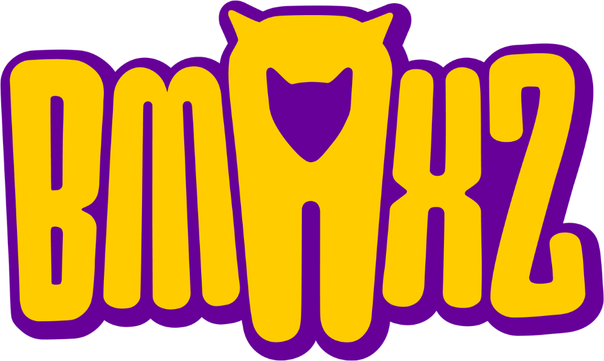
964,100FANPAGE · YOUTUBE · IG · TIKTOK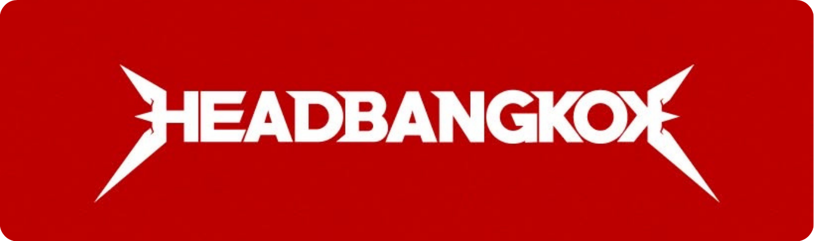
253,000FANPAGE · INSTAGRAM1.2M+COMBINED MEDIA REACH
04
TECHNICAL RIDER / พร้อมสำหรับเวทีสากล
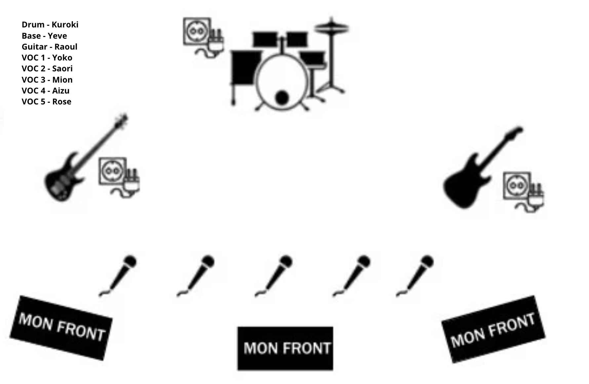
VIEW STAGE PLOT ↗แผนผังเวทีและ Input List พร้อมสำหรับผู้จัดงานต่างประเทศ ช่วยลดเวลา Advance Production และประสานงานหน้างานได้ชัดเจน
21INPUT LINES05+WIRELESS IEMX32RACK MIXER
THAI-BORN · WORLD-BOUND